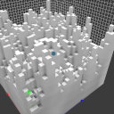
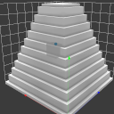

Scripting api
There is a console command (called xs) in voxedit to execute lua scripts for generating voxels. This command expects the lua script filename (.lua can be omitted) and the additional arguments for the main() method.
Calling xs <script> help will print the supported arguments for the given script.
There are two functions in each script. One is called arguments and one main. arguments returns a list of parameters for the main function. The default parameters for main are volume, region and color. color is the palette index starting from 0.
Example without parameters
function main(volume, region, color)
local mins = region:mins()
local maxs = region:maxs()
for x = mins.x, maxs.x do
for y = mins.y, maxs.y do
for z = mins.z, maxs.z do
volume:setVoxel(x, y, z, color)
end
end
end
end
Execute this via console xs scriptfile
Example with one parameter
function arguments()
return {
{ name = 'n', desc = 'height level delta', type = 'int', default = '2' }
}
end
function main(volume, region, color, n)
[...]
end
Execute this via console xs scriptfile 1 where 1 will be the value of n. Omitting the 1 will add the default value from the argument list.
LayerManager
layerMgr lets you access different layers or create new ones.
The functions are:
-
new(name, visible, region): Creates a new layer with the givenname, thevisibleboolean, and the given size and position according to theregion. -
get([layerId]): Returns thelayerfor the givenlayerId- if thelayerIdis not given, it will return the current active layer. Which by default is the layer for the volume the script is currently executed for.
Layer
-
name(): Returns the current name of the layer. -
volume(): Gives you access to the volume of the layer.
Color
palette has several methods to work with colors. E.g. to find a closest possible match for the given palette index.
The functions are:
-
color(paletteIndex): Pushes the vec4 of the color behind the palette index (0-255) as float values between0.0and1.0. -
colors(): Returns the palette RGBA colors as vec4 values. -
match(r, g, b): Returns the closest possible palette color match for the given RGB (0-255) color. The returned palette index is in the range0-255. This value can then be used for thesetVoxelmethod. -
similar(paletteindex, [coloramount]): Return a table with similar colors given by their palette index.
Region
-
mins(): The lower boundary of the region (inclusive). -
maxs(): The upper boundary of the region (inclusive). -
setMins(mins): The lower boundary of the region - given asivec3. -
setMaxs(maxs): The upper boundary of the region - given asivec3. -
x(): The lower x boundary of the region. -
y(): The lower y boundary of the region. -
z(): The lower z bounary of the region. -
width(): The width of the region measured in voxels. -
height(): The height of the region measured in voxels. -
depth(): The depth of the region measured in voxels.
Volume
-
voxel(x, y, z): Returns the palette index of the voxel at the given position in the volume[0-255]. Or-1if there is no voxel. -
region(): Return the region of the volume. -
setVoxel(x, y, z, color): Set the given color at the given coordinates in the volume.colormust be in the range[0-255].
Vectors
Available vector types are vec2, vec3, vec4 and their integer types ivec2, ivec3, ivec4.
local v1 = ivec3.new(1, 1, 1)
There are 3 possible components for this vector. You can also call ivec3.new(1) to fill all three values with a one. Or call it like this: ivec3.new(1, 2) to create a vector with the three components of 1, 2, 2.
Other
ygoing upwards.
You have access to the cvar and cmd lua bindings, too. This means that you can access any cvar value or execute any command like layeradd or layermerge to modify the whole scene.
cmd.execute("echo test")
var.int("cl_gamma")
To get a full list of commands and cvars use the console command cmdlist and cvarlist.
Available scripts
noise.lua
Generates perlin noise with the frequency and amplitude as parameters with the current selected color.

xs noise.lua 0.3 1.0
cover.lua
Generates a new voxel on top of others with the current selected color and the specified height.

xs cover.lua 1
pyramid.lua
Generates a pyramid with the current selected color and with each level being 3 voxels high.

xs pyramid.lua 3
thicken.lua
Thickens the voxel - take 1 voxel and convert to 8 voxels.


xs thicken.lua 1
grass.lua
Generate grass on top of voxels.

xs grass.lua